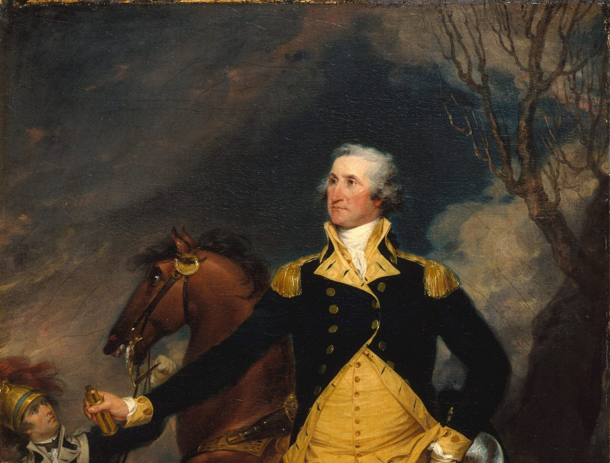

He assumed the most important role in the American War of Independence and the establishment of the country, and Washington is often referred to as the father of the United States. As an ace slave owner with 317 black slaves, Washington is another suspect. So some people think he is a "defective god".
